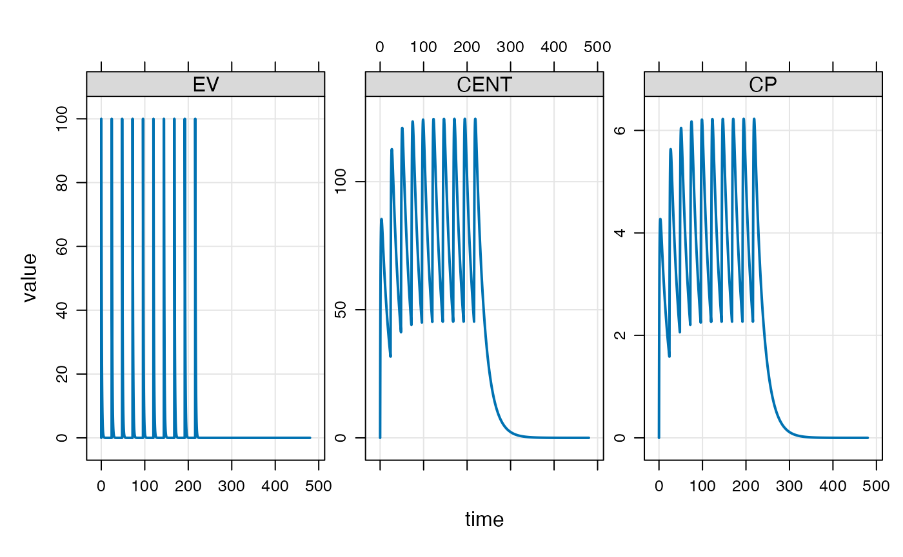

This is a simple vignette to help you get your first simulation done with mrgsolve. Check out https://github.com/metrumresearchgroup/mrgsolve for links to other resources including the user guide, blog, vignettes, pkgdown documentation and more.
Load a model
After loading the package
we’ll use the modlib() function to read, parse, compile
and load a model out of the internal model library. These models are
good to try when learning mrgsolve.
For this first example, we’re using a one compartment model (called
pk1 in the model library)
mod <- modlib("pk1")Once we create the model object (mod) we can extract
certain information about the model. For example, get an overview
mod.
.
. ----------------- source: pk1.cpp -----------------
.
. project: /private/var/fol...gsolve/models
. shared object: pk1-so-ea392a1f45d5
.
. time: start: 0 end: 24 delta: 1
. add: <none>
.
. compartments: EV CENT [2]
. parameters: CL V KA [3]
. captures: CP [1]
. omega: 0x0
. sigma: 0x0
.
. solver: atol: 1e-08 rtol: 1e-08 maxsteps: 20k
. ------------------------------------------------------Or look at model parameters and their values
param(mod).
. Model parameters (N=3):
. name value . name value
. CL 1 | V 20
. KA 1 | . .We’ll see in the section below how to run a simulation from this model. But first, let’s create a dosing intervention to use with this model.
Create an intervention
The simplest way to create an intervention is to use an event object. This is just a simple expression of one or more model interventions (most frequently doses)
evnt <- ev(amt = 100, ii = 24, addl = 9)
evnt. Events:
. time amt ii addl cmt evid
. 1 0 100 24 9 1 1We’ll see in other vignettes how to create more-complicated events as well as how to create larger data sets with many individuals in them.
For now, the event object is just an intervention that we can combine with a model.
Simulate
To simulate, use the mrgsim() function.
We use a pipe sequence here (%>%) to pass the model
object (mod) into the event function (ev())
where we attach the dosing intervention, and that result gets passed
into the simulation function. The result of the simulation function is
essentially a data frame of simulated values
out. Model: pk1
. Dim: 4802 x 5
. Time: 0 to 480
. ID: 1
. ID time EV CENT CP
. 1: 1 0.0 0.00 0.000 0.0000
. 2: 1 0.0 100.00 0.000 0.0000
. 3: 1 0.1 90.48 9.492 0.4746
. 4: 1 0.2 81.87 18.034 0.9017
. 5: 1 0.3 74.08 25.715 1.2858
. 6: 1 0.4 67.03 32.619 1.6309
. 7: 1 0.5 60.65 38.819 1.9409
. 8: 1 0.6 54.88 44.383 2.2191Plot
mrgsolve comes with several different functions for processing output. One simple function is a plot method that will generate a plot of what was just simulated
plot(out)